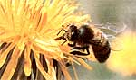
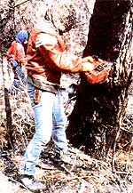
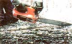
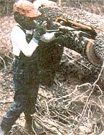
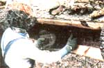
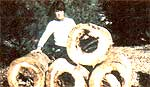
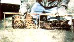
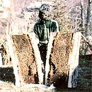
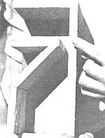

You can reap some sweet rewards with this ancient and challenging forrn tracking . . .
Honey-tree hunting is an age-old craft that-quite simply-involves following wild honeybees (Apis mellifera) to their colonies . . . which are usually found in hollow trees. Besides providing you with a fine excuse to spend some time in the outdoors, such a search can-if successful-yield gallons and gallons of free, natural sweetener and can even give you a chance to capture a hive of bees for your own backyard apiary. You don't necessarily have to live deep in the back country to hunt up a honey tree, either, because wild bee colonies can be found in suburbs and cities . . . as well as in rural areas in every part of the United States, Mexico, and southern Canada.
The early spring months, when the first major honey flow of the year begins, provide good opportunities to track bees, since the insects are still "winter hungry" and can easily be lured by s cents. The hunting season lasts as long as the insects are still flying, however ... which is a period of about six months over most of the country, and even longer in southern climes.
The bee hunter has to discover the trail to a honey tree by observing a foraging worker bee . . . because when the industrious female has collected a full load of nectar, she'll head straight for home. The fundamental tactic, then, is to note the direction in which the pollen-packing lady flies and, by making a series of such observations, eventually determine the location of the bees' home. It sounds easy when it's put that way, but-as you've probably guessed-there are a good many subtleties to the craft.
For one thing, a bee may visit several hundred flowers before heading back to the colony, and keeping track of her during that round of activity would be both difficult and time consuming. The best way to solve this problem is to provide your own source of "nectar" . . . a 50/50 mix (by volume) of water and ordinary sugar.
Given such easy pickings, the honeymakers will fill up at your nectar station and then head straight back to their tree . . . and they'll keep returning for more, too! However, before you lure bees to your sweet bait, you should be sure you're operating in an area well away (at least two miles) from any known beekeepers, or the nectar-laden insects may simply lead you to a domestic hive.
Try to start your hunt in an open space where the bees are already foraging (it's difficult to establish flight direction in a dense forest of mature trees). Once you've chosen a good spot, set out a shallow dish of sugar water with wood chips floating in it for the bees to land on. When a worker locates the food, she'll return to the colony and tell the others of her find by performing a dance pattern that gives them explicit directions to the bonanza. Soon hundreds of bees will swarm around your offering, flying back and forth between the dish and their home.
It may, of course, take the insects a while to discover the bait, particularly if only a few are working your area. If that proves to be the case, you can announce your offering by the use of such s cents as anise, sweet clover, or bergamot . . . which you might be able to purchase in your drugstore. (Anise oil-for one-has a very strong aroma, though, so it's best to dilute your supply by mixing together two ounces of alcohol, two ounces of water, and one dram of anise oil and shaking them vigorously.) Don't, however, add the s cents to the nectar itself, as they might be harmful to any bees that eat them. Instead, put a few drops on a handkerchief, or on a twig full of leaves, which you can wave about in the air and then place near the sugar-water supply to attract your prey. (Plastic "backpacking" bottles with attached caps are ideal for carrying both bait and scent.)
A quick method of collecting bees involves the use of a bait box. Traditionally, these are flat and look much like cigar boxes, but I've developed a vertical design-shaped more like a milk carton-that I think is easier to use (especially when bees are working such low-lying plants as white clover and dandelions).
The box can be made of almost any kind of scrap wood that you might have around, although I favor 3/8" plywood. Its outside dimensions are roughly 4" X 4" X 9", and there are two inside compartments. The lower chamber is approximately 6" high, and is connected to the upper room by a 3/8"-wide slit. The bee trap is left open on the bottom, and its upper side is fitted with a glass- or plastic-covered exit, which allows light to enter and attract the bees into the top section. (See the accompanying black-and-white cutaway photo for construction details.)
After the bee-catcher has been assembled, paint the outside white to make it more visible to returnees, but don't coat the interior, since the insects seem to prefer the texture and smell of unfinished wood.
When you're ready to hunt down some winged foragers, put a piece of honeycomb (buy it from an apiary supply company or a beekeeper) sprinkled with sugar water in the upper chamber, and cover the top opening with a piece of clear glass or plastic held in place with a rubber band. Then find some bees that are working low-lying flowers . . . place the bait box over a blossom with a bee in it . . . and press the container against the ground, trapping the bee in the lower chamber. Allow about 15 seconds for the insect to be lured to the light coming from the upper chamber, then pick up the box and trap another bee. Once you have 10 or 20 workers in the box's second story, cover the "window" with some opaque material and let your trap sit for five minutes . . . to give the bees time to settle down and start feeding. That done, remove both covers from the upper section and allow one (or several) of your well-fed captives to emerge.
Whether you're using a bait box or a sugar-water dish, carefully watch the flight of each bee as she leaves. She'll first lift off and fly in circles around the bait, in order to get her bearings and to fix the location of the free feast in her mind. As she flies, the circles will get bigger and bigger, and then-zing!-she'll be gone. It's easy to lose sight of your quarry at that point, so make a mental note of the direction of each bee's departure, relative to some landmark (perhaps a tree or a building). After observing several such paths, you can determine an average heading . . . which is your beeline.
Because the outgoing insects always circle before departing, it's sometimes easier to establish the general direction of the colony by moving a few yards away from the bait, where you can keep an eye on arriving foragers. They'll be coming in a straight line from their home until they get very near the bait . . . at which point they, too, will begin to circle.
Eventually, after studying a number of comings and goings, you'll determine your beeline, and the honey tree should be somewhere along that line . . . but you'll still have to figure out just where. One way to do so is to relocate your lure several hundred yards down the beeline toward the colony. There, reestablish the direction-again using either your sugar-water dish or a bait box-to get a fix from a point closer to your target. (The best time to relocate is when you have some 10 to 20 bees working the bait. When using a box, trap the remaining bees inside by covering the bottom during the move.)
If the feeders don't return to your bait within 20 minutes, they probably aren't going to, perhaps because you've gone past the bee tree. Should you get no action, then, just go back to the previous location . . . catch another load of bees . . . and, this time, move only half as far along the beeline-before trying again-as you previously did.
Another way to go about locating the colony is to mark a bee, using a piece of chalk and a small artist's brush. Just wait until the insects are busily working the bait, then scrape a little chalk dust loose . . . moisten it with saliva . . . dip in the paint brush . . . select a bee that appears to be particularly engrossed in the sugar water . . . and give her a swipe or two across the top of her abdomen. Then note the time of your target's departure and return, and figure that it takes about 5.2 minutes-on the average-for a bee to fly one-quarter mile.
Timing flights and establishing bee lines will still give you only the approximate location of a colony, but the final search for the tree itself can be speeded up if you keep the following facts in mind: Wild bees tend to make their homes in the rotted-out centers of living trees that (normally) range from 18" to 60" in diameter. The preferred tree type is highly variable and will depend largely on where you live. In the South and Southwest, black gum trees and live oaks are popular nesting places. Farther north you'll find that oaks, poplars, and maples are the most common choices for bee dwellings.
Once the insects' home base is identified, most folks remove the honey by cutting the tree down. That means, of course, that-unless it's on your land-you'll have to get permission from the owner . . . maybe offering a share of the honey and/or firewood in exchange. (In very big trees, the colony may inhabit only a hollow limb that can be cut off, leaving the rest of the woodland giant intact . . . but before doing so, make sure that the branch isn't being used merely as an entryway into the trunk.)
Don't start chopping, though, until you're sure the area has plenty of other old, large, dead or dying trees that can be used for nests and dens by birds, animals, and bees. The natural processes that create a usable hollow tree are mighty slow compared to the workings of a chain saw! If there are no substitute wildlife homes in the area-or if the bees have taken up residence in a rock formation-it's better to use a nondestructive method.
One such technique involves coaxing the bees to take up residence in a "real" hive, then inducing them to rob their old home of its honey so that you can take your share. This rather involved procedure is detailed in my book Hunting Wild Bees (available for $11.95 plus $1.10 shipping and handling from Winchester Press, Inc., Dept. TMEN, P.O. Box 1260, Tulsa, Oklahoma 74101).
If you do encounter a situation where you can cut down the tree to lay larcenous hands on the bees' precious, hard-earned golden treasure (and/or capture the bees), remember that these relatively mild-mahnered little creatures can be transformed into raging demons . . . so, before you begin any such operation, cover up! Bees can sting right through slacks, so put on two pairs (made of sturdy material) and tie them snug at the bottom.
You should also wear several shirts, a pair of gloves that cover the wrists, and a head net. Commercially made "bee bonnets" can be purchased at apiary supply houses, but I've gotten by with a turkey hunter's camouflage head net. Care must be taken, however, that the veil doesn't come in contact with the face, because bees have an uncanny way of finding such places. Make sure, too, that your headgear is sealed around the neck. Finally, it's wise to avoid dark fabrics (including denim) and clothing made of animal fibers such as wool or felt . . . these materials seem to incite bees to attack.
Of course, you'll need something to put your honey in, too. I've found that lightweight plastic buckets are good for this purpose, since they can be stacked one inside the other when empty and are easy to carry. The amount of container capacity required will depend on how lucky a find you make. A bee tree can contain anywhere from no honey to (on rare occasions) 15 to 20 gallons. Be sure you take along a large metal spoon to dip up any honey from combs that may be broken by the tree's fall, and a large, soft brush to whisk away the bees from slabs of honeycomb.
Before you tackle the task of felling the tree, calm the bees down by smoking them. (Smokers can be bought from bee supply houses, or-perhaps-borrowed from a neighbor who keeps hives.) If the colony is too high up to accomplish this easily, the smoking should be done as soon as the tree is on the ground.
It's preferable to fell the bees' habitat with a chain saw rather than an axe if you have a choice. Smoked bees will often remain surprisingly calm when a saw is used, while the repeated thumps of an axe usually excite them. Whatever method you employ, try to drop the tree as gently as possible-letting its own branches, other trees, and/or an uphill slope break the fall-since a jolting crash will smash the honeycomb, kill bees unnecessarily, and create a general mess.
If you're not planning to capture the insects, the easiest way of removing the honey is to split a rectangular slab out of the side of the fallen tree, using an axe or chain saw and wedges. But first try to figure out the extent of the cavity. This can be done fairly accurately by looking up the bottom of the felled tree, peering through any holes and splits, and tapping on the trunk. (Make the very best estimate possible, or you and your tools could end up covered with honey.)
The slab that has to be removed will probably be 36" to 60" long and 10" to 18" wide, depending on how much of the hollow is suspected of being inhabited. Make the top and bottom cuts first, then connect them with longer cuts running lengthwise down the trunk. Since the second pair will pass close to the mass of bees and honeycomb, every effort should be made to keep the blade out of the cavity. It's better to err on the shallow side than to cause needless bee and brood deaths and loss of honey by slicing too deep, especially since wedges can always be used to help pry a slab free.
Once the interior of the colony is exposed, lift the sheets of honeycomb and put them in your containers. (Keep the filled pails covered, or they'll soon be alive with bees.)
From the time the spring honey flow is fully off and running until midsummer, you can safely remove most of the bees' store of honey, since they'll still have time to replenish the supply before winter. However, in late summer or early fall, at least 40 pounds (in mild climates) and 80 pounds (in areas with harsh winters) should be left inside the tree to insure the colony's survival during the cold nectarless months. Also, leave any brood comb (the cells that contain larvae) in the tree, and the queen bee if you find her. (Should you inadvertently remove the queen, however, the colony will raise a new one. . . provided you've left some young brood.)
Now, replace the slab and tie or nail it into place, plugging up any holes with boards, pieces of bark, or stones to keep out the rain. In other words, do your best to help the colony survive, and you'll have your very own natural apiary that can be visited once or twice a year for honey extraction. (All you'll have to do then is remove the previously cut slab . . . help yourself to some honey . . . and put the cover in place again!)
Should you decide to take the insects home for your apiary, cut the fallen tree up into sections (they're called "bee gums"), each 18" to 30" long. Then give the bees an hour or so to calm down and return to the various gums. Once that's happened, staple some fly screen over both ends of each section, and you'll have portable logs with all the honey and most of the bees sealed inside. Take care, though, to transport the gums as gently as possible . . . to avoid damaging the comb.
Once the pieces are safely back home, you can transfer the bees to a commercial hive from which the inner and outer covers have been removed. To do so, take the screen off each tree section and split the log in half, exposing the comb inside. Lift out the pieces of comb, one at a time, and brush the bees into their new home. Then separate the comb into honeycomb (for you) and brood comb (for the bees). Be very careful not to injure the queen when you move her. Once she accepts her change of address, many of the worker bees will tend to stay put. Secure the brood comb in the four center frames of your hive, using elastic bands. Then replace the covers and leave the bees alone. By nightfall, most of them will have moved into their new residence.
To extract the honey from the comb you've kept for yourself, place a fine strainer over a large bowl . . . break off pieces of honeycomb . . . and crush them with your hands. Drop these wadded-up balls into the strainer and allow them to drain. The result of this delightfully gooey exercise will be a bowl full of natural honey and a strainer full of sticky beeswax. You can purify the latter material by dropping the balls of crushed honeycomb into a pot of boiling water, causing the wax to melt and float to the top. At that point, set the pot aside. As the beeswax cools, it will harden on the water's surface and can be easily removed . . . to be sold or made into candles.
EDITOR'S NOTE: If you decide you want to become serious about bee hunting, we recommend-in addition to reading the author's excellent book on this subject-that you review "Beekeeping Basics" in MOTHER NO. 67, page 78. Information on ordering back issues can be found on page 68.N
|
 A honey-tree hunt starts with a foraging bee |
 The tree is cut down |
 The honey-filled hollow is sliced open |
|
 A slab is pried off the tree |
 Some of the bees gold is stolen . . . |
 The bee gums are taken home . . . |
|
 The brood transferred to a home hive. |
 Wild honey is well worth the hunt. |
 A cutaway view of a bee-bait box. |